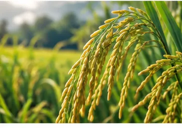
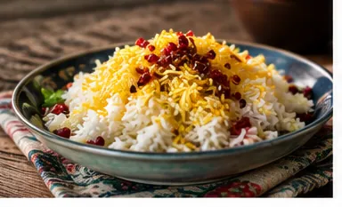
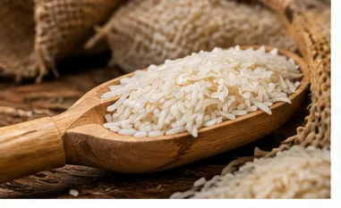
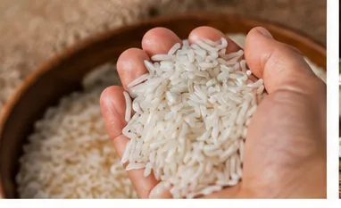
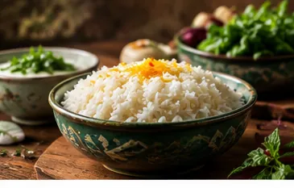
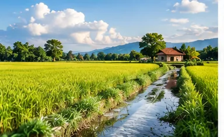
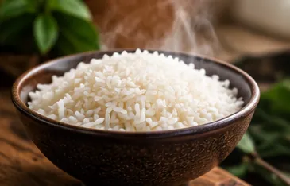

فصل کاشت برنج هاشمی
کشت برنج هاشمی در گیلان معمولاً از فصل بهار آغاز میشود. پیش از کاشت، زمین شالیزار آماده میشود و بذرها برای تولید نشا آمادهسازی میشوند.
پس از رشد نشاها، بوتههای جوان به زمین اصلی منتقل میشوند. در این مرحله، مراقبت از شالیزار اهمیت زیادی دارد و عواملی مانند آب، شرایط آبوهوایی و وضعیت زمین بر رشد بوتهها تأثیر میگذارند.
بوته برنج طی ماههای گرم سال رشد میکند و به تدریج خوشهها تشکیل میشوند. پس از رسیدن دانهها، محصول برای برداشت آماده خواهد شد.
البته زمان دقیق کاشت در تمام مناطق گیلان یکسان نیست و شرایط آبوهوایی و منطقه میتواند باعث تغییر زمانبندی کشت شود.

زمان برداشت برنج هاشمی
برنج هاشمی معمولاً پس از کامل شدن دوره رشد، در اواخر تابستان برداشت میشود. زمان دقیق برداشت به تاریخ کاشت، منطقه شالیزار و شرایط آبوهوایی بستگی دارد.
در زمان برداشت، محصول به صورت شلتوک از شالیزار خارج میشود. شلتوک در واقع دانه برنجی است که پوسته سخت خارجی آن هنوز جدا نشده است.
پس از برداشت، شلتوک باید هرچه سریعتر برای خشککردن و مراحل بعدی آماده شود. کیفیت مدیریت محصول در این مرحله میتواند روی کیفیت نهایی برنج اثر بگذارد.

خشک کردن شلتوک چه اهمیتی دارد؟
شلتوک تازه برداشتشده دارای رطوبت بالاتری است و نمیتوان آن را بدون آمادهسازی مناسب برای مدت طولانی نگهداری کرد. به همین دلیل، یکی از مراحل مهم پس از برداشت، کاهش رطوبت محصول از طریق خشککردن است.
خشک کردن ممکن است به روش طبیعی یا با استفاده از تجهیزات صنعتی انجام شود. در روش صنعتی، شرایط خشککردن مانند دما و زمان بهتر قابل کنترل است.
نکته مهم این است که خشککردن بیش از حد سریع یا نامناسب میتواند به دانه فشار وارد کند و احتمال ترکخوردگی و شکستگی را افزایش دهد. به همین دلیل، خشککردن صحیح یکی از مراحل مهم برای حفظ کیفیت دانه محسوب میشود.

فرآوری برنج هاشمی چگونه انجام میشود؟
پس از خشک شدن مناسب، شلتوک برای فرآوری به کارخانه شالیکوبی منتقل میشود.
در این مرحله ابتدا مواد اضافی و ناخالصیها جدا میشوند. سپس پوسته خارجی شلتوک جدا شده و دانه برنج به دست میآید.
بعد از آن، برنج بر اساس ویژگیهایی مانند اندازه دانه و میزان شکستگی، جداسازی و درجهبندی میشود. در این مرحله، دانههای کامل از دانههای شکسته جدا میشوند.
هرچه فرآوری دقیقتر انجام شود، امکان رسیدن به محصولی با دانههای یکنواختتر بیشتر خواهد بود. به همین دلیل، کیفیت فرآوری را نباید از کیفیت خود رقم برنج جدا دانست.

چه زمانی محصول برای خرید آماده است؟
محصول برداشتشده بلافاصله پس از خروج از شالیزار برای خرید مصرفکننده آماده نیست. ابتدا باید مراحل خشککردن و فرآوری انجام شود و سپس محصول درجهبندی و بستهبندی شود.
پس از طی این مراحل، برنج برای عرضه به بازار آماده میشود. به همین دلیل، برنج محصول جدید معمولاً پس از فصل برداشت و در ماههای بعد از آن در بازار قابل خرید است.
البته آماده بودن محصول برای فروش به معنی یکسان بودن کیفیت همه محصولات نیست. شرایط خشککردن، فرآوری و نگهداری میتواند کیفیت برنجهای مختلف را تحت تأثیر قرار دهد.

بهترین زمان خرید برنج هاشمی
اگر قصد خرید برنج هاشمی محصول همان سال را دارید، معمولاً پس از پایان برداشت و طی شدن مراحل خشککردن و فرآوری میتوانید محصول جدید را تهیه کنید.
با این حال، بهتر است انتخاب خود را فقط بر اساس زمان برداشت انجام ندهید. یک برنج با کیفیت باید از نظر ظاهر دانه، میزان شکستگی، عطر و کیفیت پخت نیز مورد بررسی قرار گیرد.
اگر فروشنده امکان ارائه نمونه دارد، پخت مقدار کمی از برنج قبل از خرید حجم بالا میتواند روش خوبی برای بررسی کیفیت باشد. در این آزمایش میتوان به میزان قد کشیدن دانه، عطر، بافت، میزان خرد شدن و شکل ظاهری برنج پس از پخت توجه کرد.

برنج تازه بهتر است یا برنجی که مدتی از برداشت آن گذشته؟
تازه بودن برنج به تنهایی نمیتواند کیفیت آن را مشخص کند. برنج پس از برداشت و فرآوری، در شرایط نگهداری مناسب میتواند برای مدت قابل توجهی کیفیت خود را حفظ کند.
بنابراین هنگام خرید، به جای اینکه فقط به عبارت «تازه برداشت» توجه کنید، بهتر است درباره زمان برداشت، نحوه فرآوری و شرایط نگهداری محصول نیز اطلاعات داشته باشید.
این موضوع بهخصوص زمانی اهمیت دارد که قصد خرید مقدار زیادی برنج برای مصرف چند ماه را دارید.

چطور برنج هاشمی را در خانه نگهداری کنیم؟
پس از خرید، نگهداری صحیح میتواند به حفظ کیفیت برنج کمک کند.
برنج خشک را در محیطی خشک، خنک، تمیز و دور از نور مستقیم خورشید نگهداری کنید. ظرف باید کاملاً خشک و تمیز باشد و در آن بهخوبی بسته شود.
رطوبت یکی از عواملی است که میتواند کیفیت برنج را کاهش دهد؛ بنابراین محل نگهداری نباید مرطوب باشد. همچنین بهتر است برنج را از گرمای زیاد و تغییرات شدید دما دور نگه دارید.
محل نگهداری را نیز باید از نظر وجود حشرات بررسی کرد. استفاده از ظروف دربسته میتواند احتمال ورود حشرات و رطوبت را کاهش دهد.
اگر مقدار زیادی برنج خریداری کردهاید، بهتر است آن را در چند ظرف مناسب تقسیم کنید. در این صورت لازم نیست برای برداشتن مقدار کمی برنج، هر بار تمام محصول را در معرض هوای محیط قرار دهید.
نکته گیلان سبز 🌱
شالیزارهای گیلان فقط محل تولید برنج نیستند؛ بلکه یکی از بخشهای مهم طبیعت و زندگی روستایی این استان به شمار میروند.
در بهار، با آغاز کشت و رشد نشاها، شالیزارها به تدریج سبز میشوند. در طول ماههای بعد، بوتههای برنج رشد میکنند و در پایان فصل رشد، خوشهها برای برداشت آماده میشوند.
این چرخه از کاشت، رشد، مراقبت، برداشت، خشککردن و فرآوری، حاصل چند ماه کار کشاورزان است و در نهایت محصولی را به وجود میآورد که به عنوان برنج گیلان به دست مصرفکننده میرسد.
برنج هاشمی برای رسیدن از شالیزار به سفره، مراحل مختلفی را طی میکند. کشت آن در گیلان معمولاً از بهار آغاز میشود و پس از چند ماه رشد، محصول در پایان فصل رشد و معمولاً در اواخر تابستان برداشت میشود.
پس از برداشت، شلتوک باید به شکل مناسب خشک شود و سپس برای جداسازی پوسته، فرآوری و درجهبندی به کارخانه منتقل شود. پس از پایان این مراحل، محصول برای بستهبندی و عرضه به بازار آماده خواهد بود.
برای خرید برنج هاشمی، بهتر است فقط به زمان برداشت یا ظاهر بسته توجه نکنید. زمان برداشت، کیفیت خشککردن، فرآوری، میزان شکستگی، عطر، کیفیت پخت و شرایط نگهداری همگی میتوانند در کیفیت نهایی محصول نقش داشته باشند.
پس از خرید نیز نگهداری برنج در محیطی خشک، خنک، تمیز و دور از رطوبت، گرمای زیاد و حشرات، به حفظ کیفیت آن کمک میکند.